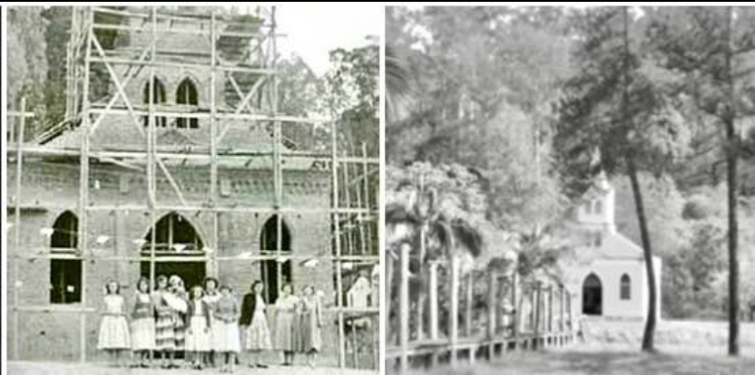

Sobre Nossa Paróquia
Fundada em 1950, a Paróquia Santo Antônio tem servido a comunidade local com dedicação e amor. Nossa missão é promover os valores cristãos através da oração, caridade e comunhão.

Horários de Missa
Missa Dominical
Domingos: 8h
Celebração eucarística com toda a comunidade paroquial.
Missa Semanal
quartas-feiras: 19h | Domingos: 8h
Momento de oração e reflexão durante a semana.
proxima missa
Eventos Paroquiais
Grupo de Jovens
Todos os sabados às 20h
Encontros de formação, oração e atividades para jovens de 15 a 30 anos.
Catequese
Segunda-feira às 18h
Preparação para Primeira Eucaristia e Crisma.
Quermesse de Santo Antônio
A tradicional quermesse em homenagem ao nosso padroeiro acontece todos os anos em junho e setembro.